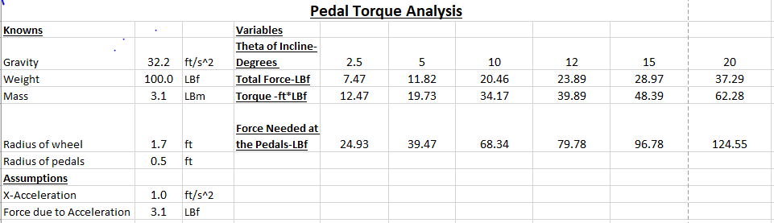

On a Roll (adapted bicycle)
Contents |
Abstract
A child with mylomanigacil spinabifida wants to be able to independently ride a bicycle/tricycle outside. The child has no feeling in her feet and muscle deterioration below her knees. Her lower body strength is in her quads, hamstrings, and glutes. She has very good motor function with her hands and arms. The tricycle needs to provide support to the trunk area of her body and have safety features that keep the child securely on it.
Team members
Hollee Sadler, Casey Price, Luke Dill, Brady Wattenbarger
Special thanks to:
Jeff Randolph and shop employees
Problem Statement/overview of the need
A child with mylomanigacil spinabifida wants to be able to independently ride a bicycle/tricycle outside. The child has no feeling in her feet and muscle deterioration below her knees. Her lower body strength is in her quads, hamstrings, and glutes. She has very good motor function with her hands and arms. The tricycle needs to provide support to the trunk area of her body and have safety features that keep the child securely on it.
Design Specifications
-Must be made of lightweight materials.
-Must be easy for the child to power using her own strength.
-Must support up to approximately 100 pounds so that the child can still use it as she grows.
-Must have adjustable seat and handle bars so that the child can still use it as she grows.
-Must have a seat that supports and secures the child to the tricycle.
-Must keep the child's feet secured to the pedals.
-Must be portable enough to fit in the back of a truck or SUV.
-Must be red.
Background research
1. There are several adaptive bicycle options out on the market today that are designed to allow individuals with disabilities such as Spina Bifida, Cerebral Palsy, and Muscular Dystrophy to experience riding a bike for themselves. The bikes, or trikes, are made to stabilize the individual riding while also giving them the freedom to pedal at the speed they want to go. Most trikes come with a seat belt of some sort to prevent major injuries from occurring. The majority of the trikes come with a sizing chart to meet the needs of young kids as well as grown adults. Although we like the general idea of some of the trikes on the market, we believe we can design a lighter, more cost efficient trike with a seat belt strap designed to go across the torso.
2. We found adaptive bikes that are similar to what we are looking for, but they cost anywhere from $1,400 - $5,800. The high cost makes it difficult for families to purchase the trikes, especially since the trikes can be outgrown depending on the age of the child when the trike is purchased.
3. The biggest gap we found was the total cost for an adaptive bicycle. Paying thousands of dollars for one of the existing trikes could put a big financial burden on families. Another noteworthy gap would include the fact that the existing trikes are not adjustable. We are looking to build a trike with an adjustable seat so that individuals can use the trike for years to come. We also are looking to include more foot stability with the pedals than the trikes on the market have to offer. Since the child we are building this for can't feel her lower legs and feet, we want to have her feet secured on the pedals in a comfortable way so that she can ride her trike without wearing her leg braces.
Conceptual Design
The purpose of this project is to create an adaptive bike, in this case a tricycle, that will allow a girl with spina bifida to experience the joy of safely riding a trike.
Design Concept 1: Adaptive Tricycle - Aluminum
Our first design concept includes the building of a tricycle designed to meet the needs of a child with spina bifida. The tricycle will be as light weight as possible (built with aluminum), and will securely hold the child in her seat as she rides. The seat belt will be fashioned in a way to avoid her lower abdomen, as requested by the family, so we are looking to have a strap that goes across her mid torso area. We will create pedals that will provide support for her ankle/shin area so that she can pedal without having to wear her leg braces. This would give her more freedom while making sure her feet don't slip off of the pedals. The seat will be positioned at a height where she can generate the most power from her glutes, quads, and hamstrings. The seat will also be adjustable so that she can continue to ride this as she grows.
Design Concept 2: Adaptive Tricycle - Steel
Our second design concept is the same as concept one except it will be built out of steel instead of aluminum. This will allow to contrast the overall weight versus cost when deciding on our final design. Also, steel will be easier to work with and assemble when performing tasks such as welding.
Design Concept 3: Bicycle to Tricycle
For this concept we would use a bicycle and modify the back end, seating, and handle bars to turn it into a tricycle that fits our design requirements. The positive of this concept is that we would already have our base structure. However, it may be harder to make the bicycle fit our needs than it is to construct a tricycle from the ground up.
Evaluate concepts/select candidate
| Specifications | Design Concept 1 | Design Concept 2 | Design Concept 3 |
|---|---|---|---|
| Material | Aluminum | Steel | Steel |
| Overall Weight (1-5) *5=lightweight | 5 | 3 | 3 |
| Safety (1-5) *5=safest | 4 | 4 | 5 |
| Overall Cost (1-5) *5=lowest cost | 4 | 4 | 3 |
| Time of Build (1-5) *5=least amount of time | 1 | 1 | 4 |
| Total | 14 | 12 | 15 |
Detailed Design
Description of selected design
For our final design we are mainly using the ideas presented in design concept #3. However, we are using some features from design concepts #1 and #2 as well. To start our final design we are going to purchase a prebuilt tricycle, which we will then modify. The main areas that need modification are the pedals and the seat, but we also plan to add a push handle to the back of the tricycle (optional rear disc brake control). The pedals will provide a stable platform for the child's feet to be secured to. There will be a raised rim around the back of the pedal to prevent the child's heel from sliding, as well as, a strap across the top of the child's foot to keep her foot from lifting off of the pedal. The seat will allow the child to feel secure and comfortable while riding her tricycle. There will be a back rest and a seat belt that will strap around the child's torso. The height of the seat will be adjustable so that the child will be able to use the tricycle as she grows.
Analysis
Engineering analysis 1
For this analysis we used the incline of the slope to simulate friction between the tricycle and the ground. 
Engineering analysis 2
In this analysis we compared the force required on the pedals for different gear ratios. This will determine the gear ratio we will use to maximize the torque generated with the least amount of force on the pedal.
Engineering analysis 3
The third engineering analysis performed was a stress analysis on the back rest frame using the FEA software on Fusion 360. In the analysis, a 50 lbf horizontal load was placed at the center of the back rest. We concluded that this load is far beyond what will ever be experienced in use and will serve as a worst-case scenario. The material used for the frame is 1.5" OD, 1/16" wall thickness steel tubing. This load resulted the following: Maximum Stress: 5686 PSI Maximum Strain: 2.07e-4 Maximum Displacement: 2.363 mm Minimum Safety Factor: 5.28. From these results, we concluded that the material chosen will be adequate for the application.
CAD Drawings
Bill of Materials
| Item | Description | Price | Quantity | Link for Purchasing | Total |
|---|---|---|---|---|---|
| Sun Bicycles - Traditional Tricycle | 20" Unisex | $439.99 | 1 | Cookeville Bike Shop | $439.99 |
| Pedal Straps | Black Nylon with Buckles | $7.99 | 1 | Pedal Straps | $7.99 |
| Upholstery Foam | (3x18x18)in | $19.99 | 1 | Amazon Foam | $19.99 |
| Black Vinyl | Marine Vinyl Black Fabric | $7.98/yd | 2 | Amazon Black Vinyl | $15.96 |
| Seat Belt | 2 Point Adjustable Car Seat Safety Belt | $15.99 | 1 | Amazon Seat Belt | $15.99 |
| Bike Handle Grips | rubber grips w/ pattern (black) | $12.99 | 2 | Cookeville Bike Shop | $25.98 |
| Rear Disc Brake Assembly | 3-Wheeler Rear Brake | $79.99 | 1 | Cookeville Bike Shop | $79.99 |
| Sprockets | 28T & 36T | $28.98 | 1 | Cookeville Bike Shop | $28.98 |
| Bearings | For Pedals | ~$6.50 | 4 | Motion Industries | ~$26.00 |
| Red Paint | 1 Quart | ~$13.00 | 1 | Highland Hardware | ~$13.00 |
Total ~$675.00
Assembly Instructions
The tricycle will be delivered fully assembled. However, there are some instructions for making adjustments to the seat and pedals.
Seat Adjustment or Removal
-using a 17mm wrench or socket remove the 2 nuts which are holding the chrome back support on.
-using two 1/2" wrenches or sockets loosen the neck bolt which is securing the seat post.
-lift the seat assembly straight up and lay flat (be aware that the brake cable will still be attached).
Pedal Adjustment
-using an adjustable wrench, place it on the flats of the pedal shaft which is located on the inside of the pedal (closest to the frame).
-the left pedal is reverse threaded, left will tighten and right will loosen.
-the right pedal is regular threaded, left will loosen and right will tighten
Fabrication Process
Testing and implementation
Over the course of the semester, we met with the family several different times. Each time we checked fit and discussed design ideas. We also made sure that the direction we were taking the design was what the family desired and that it suited their needs.
The last two times that we met with the family before delivery, we had the child sit on the tricycle and made sure that she felt secure and could reach the handlebars and pedals. The final time we met with the family the child was able to test ride the tricycle. She did quite well, however her parents said that the hand and feet coordination required to ride would take her a decent amount of time to master. They said that they plan to work with the child's therapist to improve her pedaling motion.
When we delivered the tricycle the child and family were so excited. We enjoyed a meal together with the family and then went over to an empty parking lot for the child to ride. She rode for about thirty minutes to an hour and had several races against her younger brother. It was a great evening and an amazing ending to the project.
Photos of Completed design
Instructions for safe use
Do not use the tricycle unless supervised by an adult that fully understands how to safely use this product. Please be sure to fasten the seatbelt across the torso of the rider to keep them from falling out. Buckle each of the feet to the pedals using the straps provided. Be sure to make the rider aware of how to use the hand brake. Please keep the tricycle on level terrain to provide the safest and most comfortable ride. A helmet is recommended.
Project Summary, Reflection
This project has proved to be fun and rewarding for all involved. We were able to gain valuable experience while modifying this trike and meeting the needs of the family involved. Fortunately, we were able to keep the project within our budget. The modifications made on the tricycle in the machine shop went smoothly. The family has been very excited to see the progress made and are very excited that the child will be able to ride a trike safely. Our final product matched up nicely with the design concept we originally came up with. We modified this trike to allow this child with spina bifida to safely ride a trike. This has been a humbling experience for us and we are very happy that we were able to help this family.
Extra notes about our final design
-we inserted bearings in the pedals to improve motion and wear over time.
-we drilled & tapped 3 crank positions for increased adjustability.
-we discovered Rustoleum chrome spray paint works great.
-making card board legs with bolts acting as joints for the knees and hips worked great as a reference.